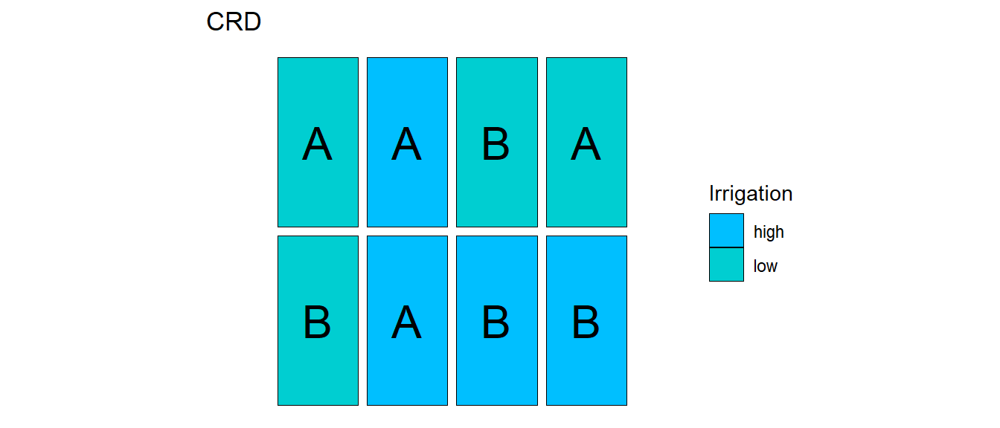
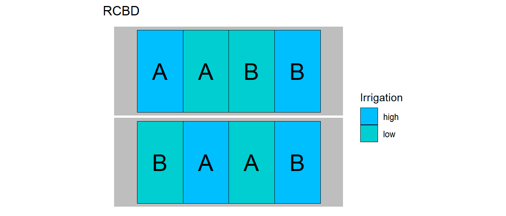
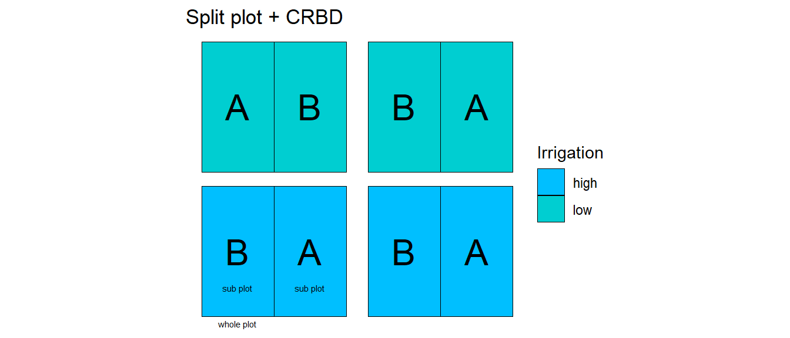
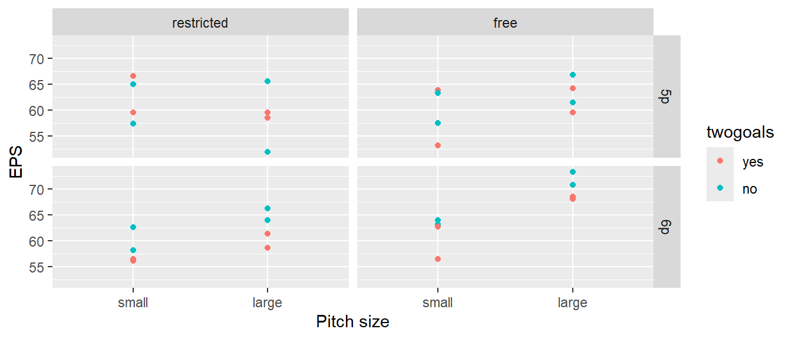
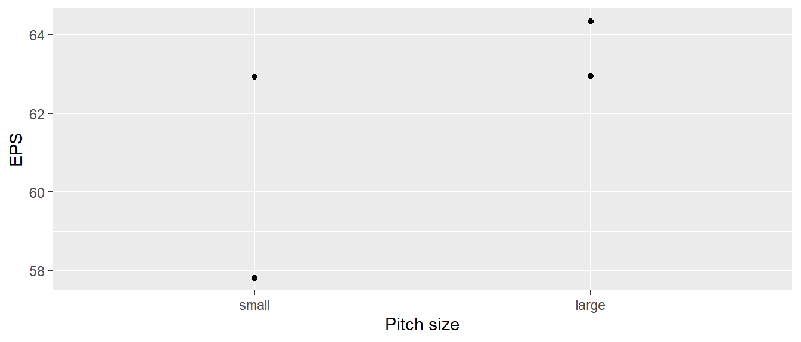
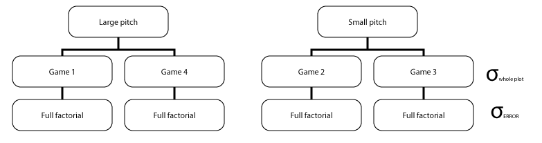
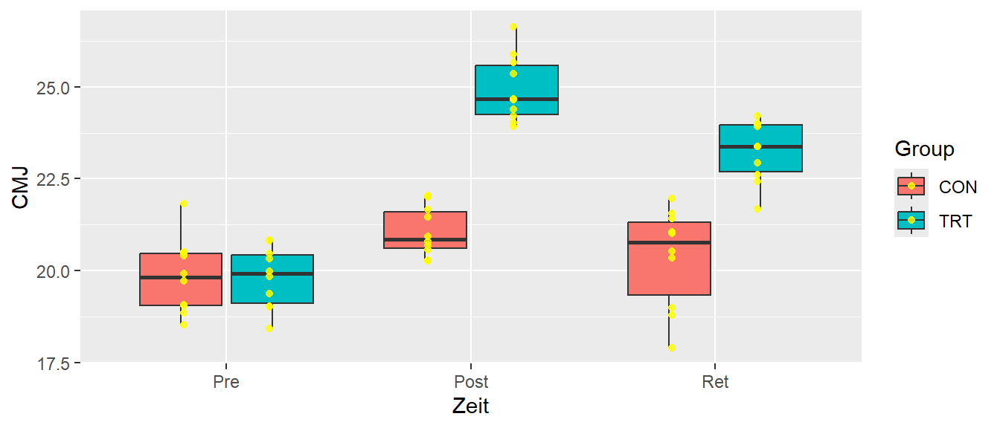

| game | pitch | twogoals | nplayer | ntouches | eps |
|---|---|---|---|---|---|
| G1 | large | yes | 6p | free | 68.5 |
| G1 | large | no | 5p | free | 66.8 |
| G1 | large | yes | 5p | restricted | 58.5 |
| G1 | large | no | 6p | free | 70.8 |
| G1 | large | yes | 6p | restricted | 61.3 |
| G1 | large | no | 5p | restricted | 51.9 |
32 Split-Unit Designs
32.1 Split-plot
32.1.1 Farming
32.1.2 CRD



32.1.3 Example - Soccer
Das folgende hypothetische Beispiel ist adaptiert nach Kowalski et al. (2007)]

Whole-plot analysis

Whole-plot analysis Analysis of variance
| game | eps | pitch |
|---|---|---|
| G1 | 62.94 | large |
| G2 | 57.81 | small |
| G3 | 62.92 | small |
| G4 | 64.34 | large |
mod_whole_plot <- aov(eps ~ pitch, df_bars)
summary(mod_whole_plot) Df Sum Sq Mean Sq F value Pr(>F)
pitch 1 10.69 10.685 1.521 0.343
Residuals 2 14.05 7.024 Error components split-plot analysis

Complete Split-plot analysis
mod_sp <- aov(eps ~ (pitch+nplayer+twogoals+ntouches)^2 + Error(game), df)
summary(mod_sp)
Error: game
Df Sum Sq Mean Sq F value Pr(>F)
pitch 1 85.48 85.48 1.521 0.343
Residuals 2 112.39 56.20
Error: Within
Df Sum Sq Mean Sq F value Pr(>F)
nplayer 1 41.18 41.18 4.210 0.0542 .
twogoals 1 45.36 45.36 4.637 0.0443 *
ntouches 1 75.95 75.95 7.765 0.0118 *
pitch:nplayer 1 78.44 78.44 8.019 0.0107 *
pitch:twogoals 1 1.09 1.09 0.111 0.7424
pitch:ntouches 1 62.44 62.44 6.383 0.0206 *
nplayer:twogoals 1 27.94 27.94 2.856 0.1074
nplayer:ntouches 1 43.95 43.95 4.492 0.0474 *
twogoals:ntouches 1 2.94 2.94 0.301 0.5899
Residuals 19 185.86 9.78
---
Signif. codes: 0 '***' 0.001 '**' 0.01 '*' 0.05 '.' 0.1 ' ' 1Model
\[\begin{align*} Y_{hij} &= \mu + \alpha_i + \epsilon_{i(h)}^W \\ & + \beta_j + (\alpha\beta)_{ij} + \epsilon_{j(hi)}^S \end{align*}\]
\(\epsilon_{i(h)}^W \sim \mathcal{N}(0,\sigma_{W}^2)\)
\(\epsilon_{jt(hi)}^S \sim \mathcal{N}(0,\sigma_s^2)\)
\(h=1,\ldots,s\)
\(i=1,\ldots,a\)
\(j=1,\ldots,b\)
\(\epsilon_{jt(hi)}^S \sim \mathcal{N}(0,\sigma_s^2)\)
\(h=1,\ldots,s\)
\(i=1,\ldots,a\)
\(j=1,\ldots,b\)
32.1.4 Effect size
\[\begin{align*} \hat{\omega}^2_{\text{between}} &= \frac{SS_A -(a-1)MS_{S/A}}{SS_A + SS_{S/A}+MS_{S/A}} \\ \hat{\omega}^2_{\text{within}} &= \frac{(b-1)(MS_b - MS_{B\times S/A})}{SS_B + SS_{B\times S/A}+SS_{S/A}+MS_{S/A}} \\ \hat{\omega}^2_{AB} &= \frac{(a-1)(b-1)(MS_{AB}-MS_{B\times S/A})}{SS_{AB}+SS_{B\times S/A}+MS_{S/A}} \end{align*}\]
\(A=\)
group, \(B=\)time, \(AB=\)group:time, \(S/B=\)Error: id, \(B\times S/A=\)Error: within im Beispiel32.1.5 Effect size in R
#effectsize::omega_squared(mod)32.1.6 Multiple comparisons
#mod_em <- emmeans(mod, ~time*group)
#pairs(mod_em)Which comparisons are meaninful?!
#mod_em2 <- emmeans(mod, ~time|group)
#pairs(mod_em2)32.2 Longitudinal und Pretest-Posttest Designs
A more common example

32.3 Data structure
| id | time | group | CMJ |
|---|---|---|---|
| S1 | Pre | CON | 21.8 |
| S2 | Pre | CON | 20.4 |
| S11 | Pre | TRT | 19.0 |
| S1 | Post | CON | 20.9 |
| S11 | Post | TRT | 24.7 |
| S3 | Ret | CON | 20.3 |
| S14 | Ret | TRT | 22.6 |
32.4 Model
\[\begin{align*} Y_{hij} &= \mu + \theta_h + \alpha_i + \epsilon_{i(h)}^W \\ & + \beta_j + (\alpha\beta)_{ij} + \epsilon_{j(hi)}^S \end{align*}\]
\(\epsilon_{i(h)}^W \sim \mathcal{N}(0,\sigma_{W}^2)\)
\(\epsilon_{jt(hi)}^S \sim \mathcal{N}(0,\sigma_s^2)\)
\(h=1,\ldots,s\)
\(i=1,\ldots,a\)
\(j=1,\ldots,b\)
\(\epsilon_{jt(hi)}^S \sim \mathcal{N}(0,\sigma_s^2)\)
\(h=1,\ldots,s\)
\(i=1,\ldots,a\)
\(j=1,\ldots,b\)
32.5 Split-plot analysis
mod <- aov(CMJ ~ group*time + Error(id), df_1)
summary(mod)
Error: id
Df Sum Sq Mean Sq F value Pr(>F)
group 1 75.85 75.85 83.11 3.63e-08 ***
Residuals 18 16.43 0.91
---
Signif. codes: 0 '***' 0.001 '**' 0.01 '*' 0.05 '.' 0.1 ' ' 1
Error: Within
Df Sum Sq Mean Sq F value Pr(>F)
time 2 103.27 51.64 56.62 7.64e-12 ***
group:time 2 41.15 20.58 22.56 4.45e-07 ***
Residuals 36 32.83 0.91
---
Signif. codes: 0 '***' 0.001 '**' 0.01 '*' 0.05 '.' 0.1 ' ' 132.6 Again, standard analysis is not correct!
mod_falsch <- aov(CMJ ~ id + group*time, df_1)
summary(mod_falsch) Df Sum Sq Mean Sq F value Pr(>F)
id 19 92.28 4.86 5.326 8.45e-06 ***
time 2 103.27 51.64 56.624 7.64e-12 ***
group:time 2 41.15 20.58 22.563 4.45e-07 ***
Residuals 36 32.83 0.91
---
Signif. codes: 0 '***' 0.001 '**' 0.01 '*' 0.05 '.' 0.1 ' ' 132.7 Alternative analysis using mixed models
mod_lmer <- lmer(CMJ ~ time*group + (1|id), df_1)
anova(mod_lmer)Analysis of Variance Table
npar Sum Sq Mean Sq F value
time 2 103.272 51.636 56.624
group 1 75.794 75.794 83.115
time:group 2 41.150 20.575 22.56332.8 Cross-over designs
TBD
32.9 Further reading
32.9.1 Allgemein
Kutner u. a. (2005, p.1172), Kowalski, Parker, und Geoffrey Vining (2007), Altman und Krzywinski (2015)